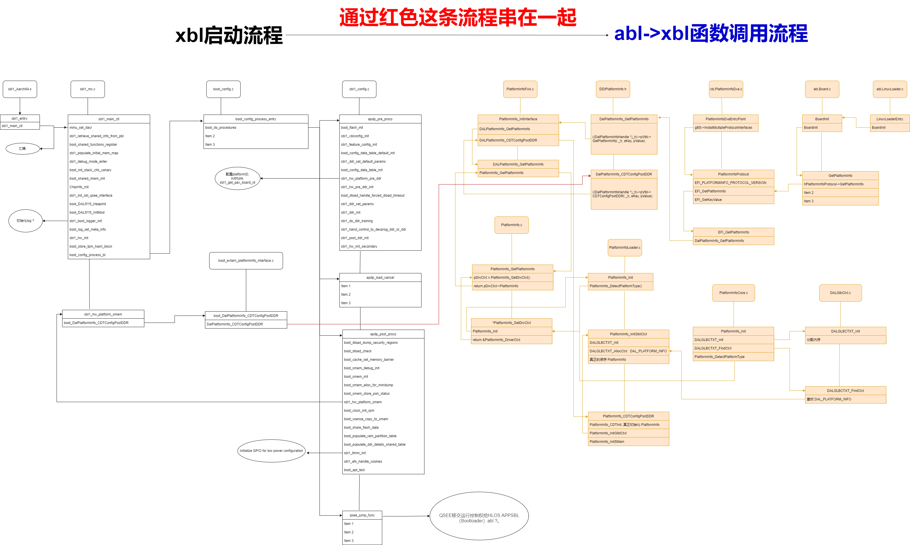

README
跑gms的一些记录备注
cts
help
help
help run
l r
显示报告
l d
显示连接设备
-a armeabi-v7a
只跑32位
–shard-count 4
4台机器一起跑
-m
模块
–exclude-filter
调过模块,testcase run retry –retry 127 –exclude-filter “CtsLocationTestCases” –exclude-filter “CtsLibcoreTestCases” –exclude-filter “CtsNNAPITestCases” –exclude-filter “CtsLibcoreOkHttpTestCases” –exclude-filter “CtsNetTestCases”
retry
run retry –retry 报告
run retry –retry 13 –shard-count 4
添加plan
add subplan –name plan名称 –result-type failed –session 报告
add subplan –name sub-cts –result-type failed –session 16
run cts –subplan sub-cts
模块
camera
run cts -m CtsCameraTestCases -a armeabi-v7a –shard-count 4
run retry –retry 11 –shard-count 4 –exclude-filter “CtsCameraTestCases android.camera.cts.HeifWriterTest”
sts
run sts-dynamic-full -a arm64-v8a -s e4e190fc -m CtsSecurityTestCases -t android.security.cts.StagefrightTest#testStagefright _cve_2022_22059

GSI
那个gsi是在cts环境测试得只是命令不是run cts，改为run cts-on-gsi
刷机方法
adb reboot fastboot fastboot delete-logical-partition product_a fastboot create-logical-partition product_a 0 fastboot flash system system.img fastboot -w && fastboot erase userdata fastboot reboot
VTS
刷机方法
adb reboot fastboot fastboot delete-logical-partition product_a fastboot create-logical-partition product_a 0 fastboot flash boot boot-debug.img fastboot flash system system.img fastboot -w && fastboot erase userdata fastboot reboot